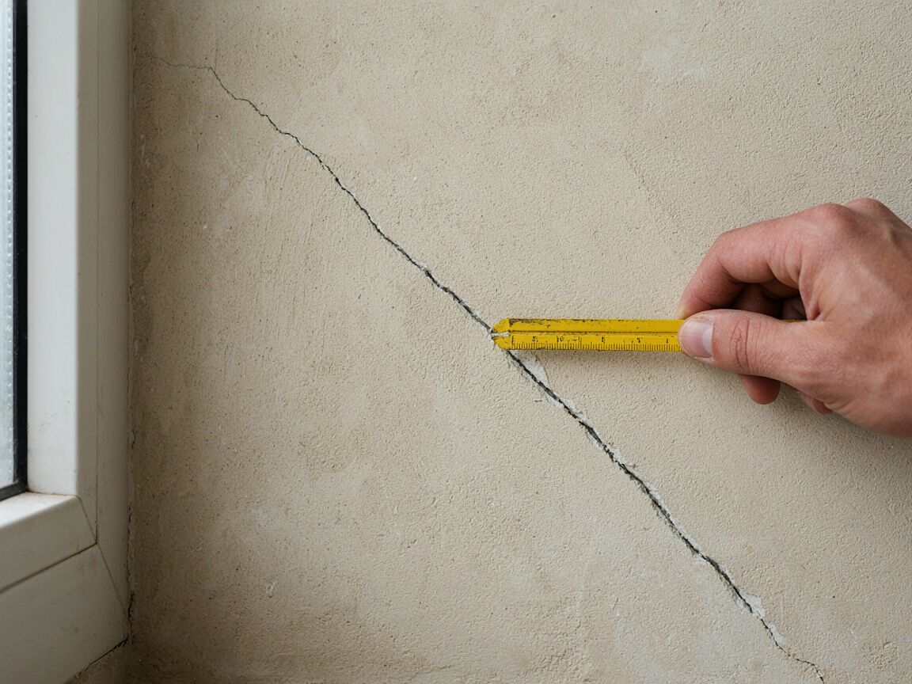
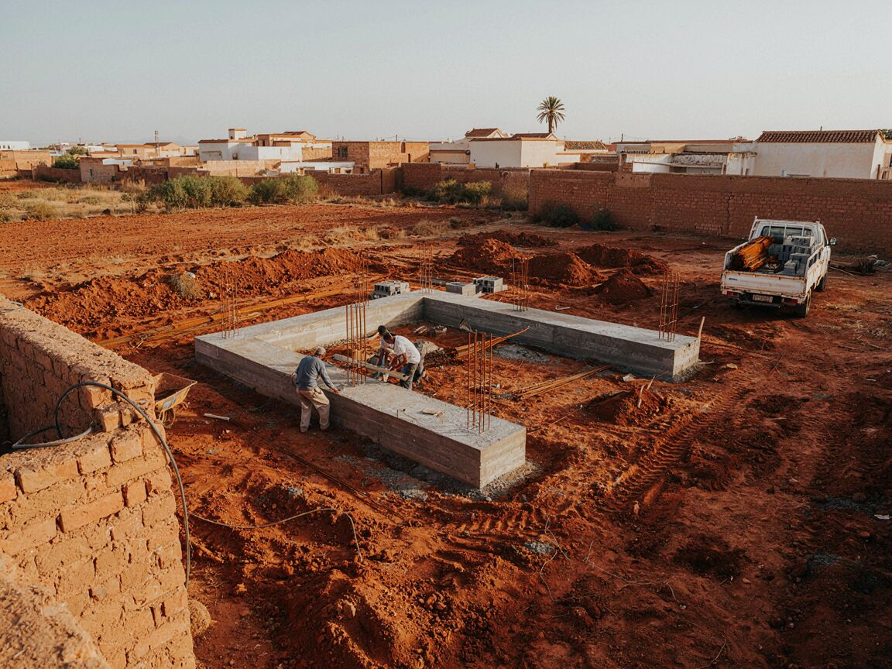
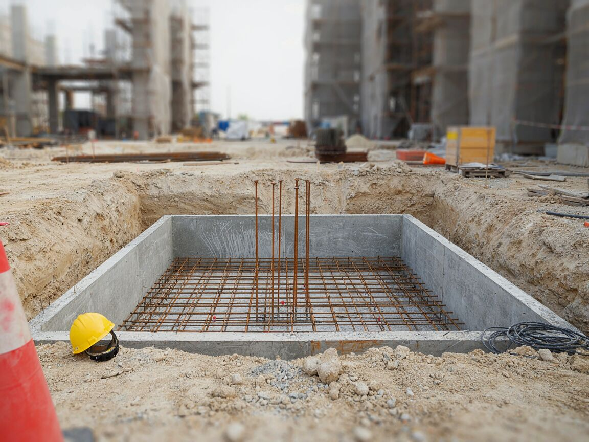
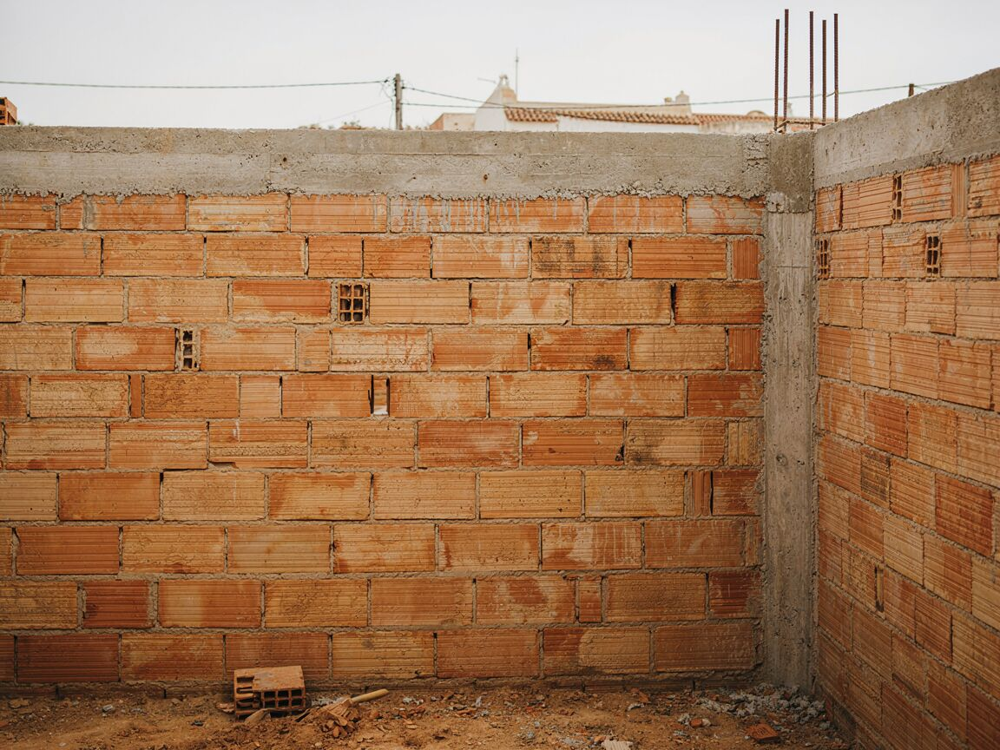
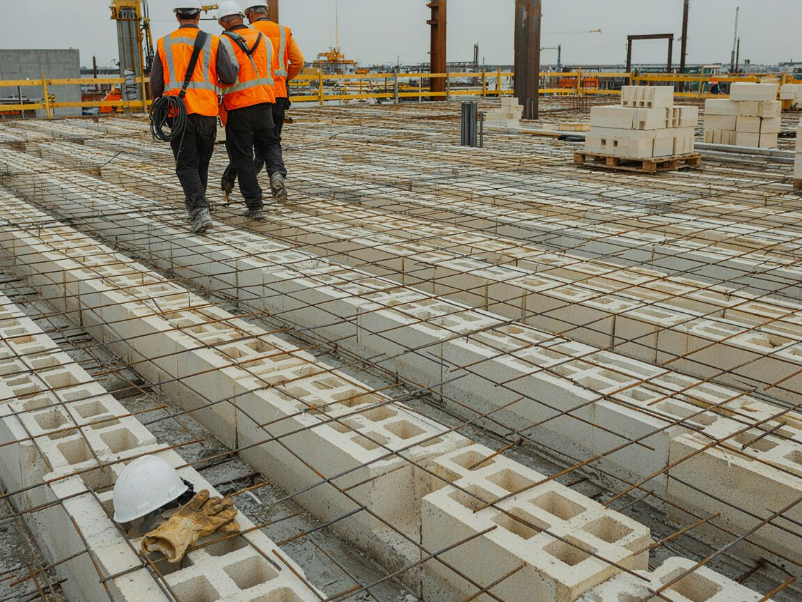
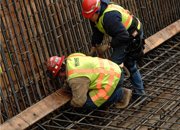
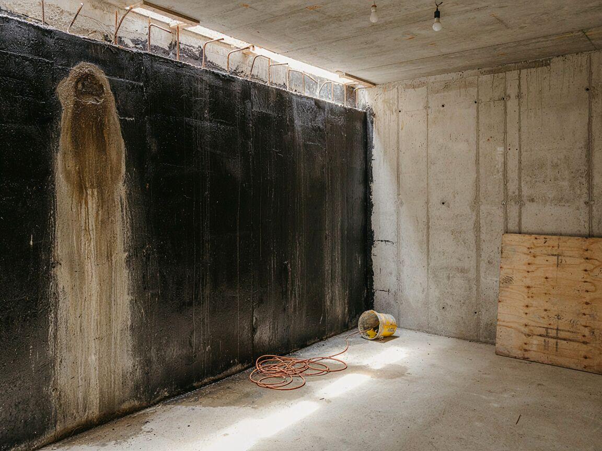

Aucun article ne correspond. Voir tous les thèmes.

Étude de sol au Maroc : est-elle obligatoire et combien coûte-t-elle ?
Ce que révèle une étude géotechnique, quand la faire, combien elle coûte pour une villa, et pourquoi c'est l'une des dépenses les plus rentables d'un chantier.
Lire l'article →
Règlement parasismique RPS 2011 : ce qu'il change pour votre maison
Zonage sismique, règles de conception, chaînages et ferraillage : ce que le règlement parasismique impose concrètement à une villa ou un riad au Maroc.
Lire l'article →
Dosage du béton : fondations, dalle, poteaux et béton de propreté
Combien de ciment par m³ selon l'ouvrage, comment se compose un mètre cube de béton, et les erreurs de chantier qui font perdre sa résistance au béton.
Lire l'article →
Prix d'une piscine en béton au Maroc en 2026
Prix au m² de bassin, exemples chiffrés, ce que les devis n'incluent pas toujours et pourquoi un bassin en béton armé se calcule comme une structure.
Lire l'article →
Fissures dans une maison : causes, gravité et quand s'inquiéter
Comment lire une fissure (largeur, tracé, évolution), distinguer le superficiel du structurel, et les bons réflexes avant de reboucher.
Lire l'article →
Ajouter un étage à sa maison au Maroc : faisabilité et démarches
Avant d'ajouter un étage : ce qu'autorise l'urbanisme, ce que la structure existante peut porter, le permis, et les renforcements possibles.
Lire l'article →
Étanchéité d'une toiture-terrasse au Maroc : solutions et prix au m²
Bitume, liquide ou membrane PVC : comparer les solutions d'étanchéité, leurs prix au m², et les détails qui évitent les infiltrations.
Lire l'article →
Quel type de fondation choisir : semelles, radier ou pieux ?
Le type de fondation ne se choisit pas sur catalogue : il découle de la portance du sol, de la profondeur du bon sol et des charges de votre bâtiment.
Lire l'article →
Dimensions d'une semelle isolée ou filante : comment les calculer
La taille d'une semelle découle d'un calcul simple dans son principe : la charge qu'elle reçoit divisée par ce que le sol peut supporter. Le reste est affaire de ferraillage et de détails.
Lire l'article →
Longrines : à quoi servent-elles et comment les dimensionner ?
Invisibles une fois le dallage coulé, les longrines sont pourtant un élément clé de la tenue parasismique d'une maison : elles empêchent les fondations de bouger chacune de leur côté.
Lire l'article →
Chaînages horizontaux et verticaux : rôle et règles au Maroc
Les chaînages ceinturent les murs de maçonnerie et les relient aux planchers. Dans une région sismique comme celle de Marrakech, ils font la différence entre un mur qui fissure et un mur qui s'effondre.
Lire l'article →
Section minimale d'un poteau en béton armé selon le RPS
Le poteau de 20 × 20 cm encore vu sur certains chantiers ne respecte pas le règlement parasismique. Voici ce que le RPS impose et ce qui reste à calculer.
Lire l'article →
Plancher hourdis ou dalle pleine : lequel choisir pour votre maison ?
Le plancher à corps creux est la solution la plus répandue au Maroc pour les villas, mais la dalle pleine reste indispensable dans certains cas. Les critères pour trancher.
Lire l'article →
Poutre en béton armé : quelle retombée pour quelle portée ?
La retombée d'une poutre est souvent un sujet de discussion entre architecte, client et ingénieur. Voici les ordres de grandeur et les marges de manœuvre réelles.
Lire l'article →
Enrobage des armatures du béton armé : quelles valeurs respecter ?
L'enrobage, c'est l'épaisseur de béton entre l'acier et la surface. Quelques millimètres en moins suffisent à faire rouiller les armatures et éclater le béton en quelques années.
Lire l'article →
Contrôle du ferraillage avant coulage : la checklist du chantier
Une fois le béton coulé, il est trop tard : le ferraillage devient invisible. Le contrôle avant coulage est le moment où se joue la solidité réelle de votre structure.
Lire l'article →
Cure du béton par forte chaleur : les bons gestes à Marrakech
Quand il fait plus de 40 °C à Marrakech, un béton mal protégé peut perdre une part importante de sa résistance et se couvrir de fissures en quelques heures.
Lire l'article →
Délai de décoffrage d'une dalle, d'une poutre et des poteaux
Décoffrer trop tôt est l'une des causes classiques de flèches excessives, de fissures, voire d'effondrement. Les délais à respecter selon l'élément et les conditions.
Lire l'article →
Ouvrir ou supprimer un mur porteur : étapes, risques et étude
Agrandir un séjour ou créer une baie en supprimant un mur porteur est possible, à condition de reporter correctement les charges. Ce qu'il faut savoir avant de casser.
Lire l'article →
Joint de dilatation d'un bâtiment : quand et tous les combien ?
Un bâtiment en béton se dilate à la chaleur et se rétracte au froid. Au-delà d'une certaine longueur, il faut le couper en blocs indépendants pour éviter les fissures.
Lire l'article →
Mur de soutènement : calcul, drainage et erreurs à éviter
Un mur de soutènement retient des tonnes de terre et souvent de l'eau. Mal conçu ou mal drainé, il bascule ou se fissure : c'est un ouvrage à faire calculer.
Lire l'article →
Remontées capillaires dans les murs : causes et traitements
Humidité en pied de mur, auréoles, salpêtre : les remontées capillaires sont fréquentes dans les maisons anciennes et les riads. Comment les reconnaître et les traiter durablement.
Lire l'article →
Acier HA FeE500 : diamètres, sections et poids au mètre
Pour lire un plan de ferraillage, estimer une commande d'acier ou vérifier une facture, il faut connaître la section et le poids au mètre de chaque diamètre de barre.
Lire l'article →
Classes de béton B25, C25/30, C30/37 : que signifient-elles ?
Sur les plans et dans les cahiers des charges, le béton est désigné par une classe de résistance. Savoir la lire permet de commander le bon béton et de vérifier ce qui est livré.
Lire l'article →
Reprise en sous-œuvre des fondations : quand et comment ?
Renforcer ou approfondir les fondations d'un bâtiment existant sans le démolir est possible. C'est une opération délicate, qui se conçoit et se surveille avec soin.
Lire l'article →
Sous-sol : cuvelage, étanchéité et infiltrations d'eau
Un sous-sol qui prend l'eau est l'un des défauts les plus coûteux à reprendre. La protection se décide dès la conception, en fonction de l'eau présente dans le sol.
Lire l'article →Besoin d'une étude pour votre projet ?
SIGMA ICC réalise les études et le suivi de chantier, à Marrakech et partout au Maroc.